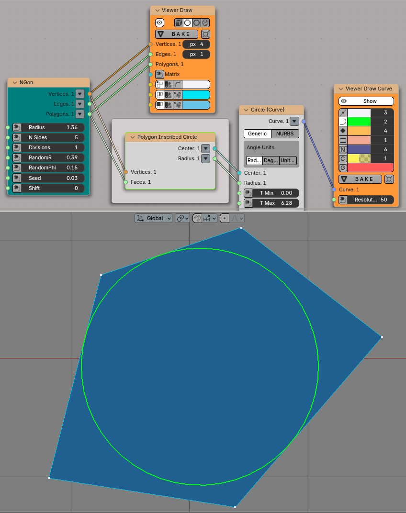
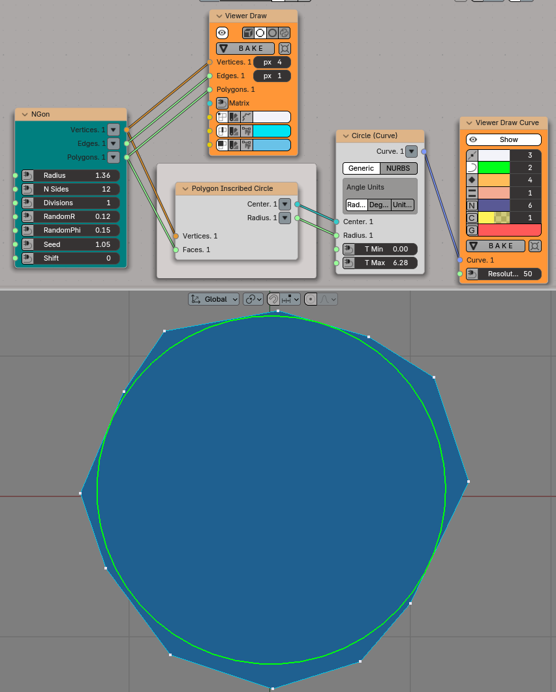

Polygon Inscribed Circle¶
Dependencies¶
This node requires SciPy library to work.
Functionality¶
This node calculates the center and the radius of inscribed circle for each convex face of the input mesh. Obviously, it is not always possible to inscribe a circle into a polygon, if polygon is not a triangle. For non-tiangular polygons, this node calculates the biggest circle which can be inscribed into the polygon, i.e. the circle which touches as many polygon edges as possible.
Inputs¶
This node has the following inputs:
Vertices. The vertices of the input mesh. This input is mandatory.
Faces. The faces of the input mesh. This input is mandatory.
Parameters¶
This node has the following parameters:
Flat Matrix output. If checked, the node will generate a single flat list of matrices in the Matrix output, for all input meshes. Checked by default.
On concave faces. This parameter is available in the N panel only. Defines what the node should do if it encounters a concave face. There are the following options available:
Skip. Just skip such faces - do not generate inscribed circles for them.
Error. Stop processing and give an error (turn the node red).
As Is. Try to generate an inscribed circle for such face anyway. In many cases, the generated circle will be incorrect (will be too small or even outside the polygon), but in some simple cases it can be valid.
The default option is Skip.
Outputs¶
This node has the following outputs:
Center. For each inscribed circle, this contains a matrix, Z axis of which points along face normal, and the translation component equals to the center of the inscribed circle. This output can be used to actually place circles at their places.
Radius. Radiuses of the inscribed circles.
Examples of Usage¶
In many cases inscribed circle can touch only two or three polygon edges:
If the polygon is almost regular, the circle will touch more edges:

{kind=link}
{kind=link}